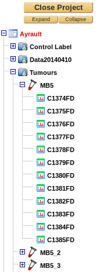

Project management¶
Project creation¶
Only bioinformaticians, massists and data managers can create projects.
From the Project selection interface click on the Create a new Project button. The following form is then displayed:
- Name: Provide a mandatory name for the project.
- Description: an optional description for the project.
- Protein visibility: Specify the project-wide protein visibility rule to be used. See Match groups and protein visibility below for detailed information on this concept.
- Identifier conversion: myProMS tries to map protein identifiers to their synonyms in multiple biological resources. If a conversion is selected, the default identifiers used for protein sequence identification during the MS search process can be replaced by synonyms more meaningful to end users. Unmapped identifiers will not be changed.
- Relevant PTMs: Post-translational modifications relevant to project can be selected here. The list of selectable modifications can be modified in Sequence Modification section. Information regarding relevant modifications will then be available when performing multiple tasks such as listing, comparing, quantifying and displaying proteins or modification sites.
- Project owner: Specify the owner of the project here. This information can be used to sort projects in the projects selection window.
- Workgroup: Specify which workgroup this project should belong to if any.
- Comments: an optional comments for the project.
Click on the Save button to create project.
Note
Projects can be edited at any time to modify any of these settings.
Project organization¶
Data in a project are hierarchically organized as shown in the figure below:
Experiments¶
An Experiment item represents an actual biological experiment for which MS data will be collected.
To create a new experiment, select the project element in the top left navigation frame and click on Add Experiment(s) in the option frame.

Provide a name and optional description and/or comments. Multiple experiments can be created at once if the field Multiple entries labels is filled in. Labels defined in this field will be sequentially appended to the name each experiment created. Labels can be defined individually using a comma-separated string (eg. “A,D,G”) or a range string using a ‘-‘ (eg. “1-5”);
Samples¶
A Sample item is a “loose” entity that can represent a single or multiple mixed (e.g. for labelled quantification) biological samples. It can be viewed as a sub-experiment or Analysis-containing item. It is up the user to define its function depending on the experimental context of the analyses it contains.
To create a new sample, select its parent experiment in the navigation frame and click on Add Sample(s) in the option frame.
Provide a name and optional description and/or comments. Multiple samples can be created as described for experiments (see Experiments).
Analyses¶
An Analysis corresponds to a dataset imported from a single search engine result file: mostly the MS/MS spectra (except for PMF runs), the peptide/protein identifications and associated quantifications when present in the file. Analysis data must be imported, validated and reported before end users can access them and further process their results. These procedures are described in the chapter Analysis data import and validation below.